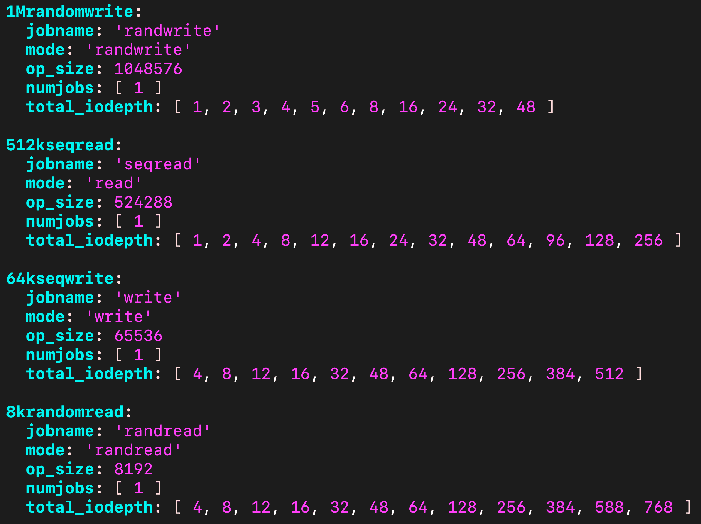

Benchmarking Performance with CBT: Defining YAML Contents. Part Two

CBT Performance Benchmarking - Part 2. What is a YAML file and how do we use them within CBT?
Outline of the Blog Series ¶
- Part 1 - How to start a Ceph cluster for a performance benchmark with CBT
- Part 2 - Defining YAML contents
- Part 3 - How to start a CBT performance benchmark
Contents:
- Introduction: What goes into the YAML file?
- Key sections of the YAML file
- Expressing queue depth
- Why do we have lots of different IO values in the yaml?
Introduction: What goes into the YAML file? ¶
Once you have finished Part 1 you should have an erasure coded Ceph cluster setup now, and you're nearly ready to run a CBT test on it! However, before we can do that, we need to understand what YAML contents we want.
The YAML file defines what tests we will run on the cluster.
We could briefly describe the YAML file as having 3 main sections to it:
clustersection: Where the YAML describes how CBT communicated with the cluster. Eg user ID, clients, OSDs, ceph binary paths etc.monitoring_profilessection: Where the YAML describes the monitoring tools used (collectl in our case) to collect statistics.benchmarkssection: Where the benchmarking technique is specified (librbdfio) in our case, and also where the workloads are placed.
Key sections of the YAML file: ¶
Cluster
Here you will be describing your ceph cluster configuration.
Now the reason user, head, clients, osds, mons etc fields are required is because CBT uses a parallel distributed shell (pdsh) with SSH to login to the various entities of the cluster that have been defined in the cluster section. This enables "ceph" commands and also the ability to start up the benchmark tool (such as FIO) on the client endpoints (which are defined in the "clients" field).
A typical use case of Ceph is that there is a separately attached host server dedicated for reading and writing data to the storage. Therefore it is possible to run CBT on a completely separate server from the cluster itself, and the performance data can be collected on the attached server. So the separately attached server is orchestrating the starting and stopping of the benchmark tools on the Ceph cluster.
Important side note: A requirement of CBT is that passwordless SSH has to be enabled from the server running CBT to the Ceph nodes defined in the head, clients and osds fields.
Example:
cluster:
user: 'exampleUser' # the SSH user ID that is going to be used for accessing the ceph cluster
head: "exampleHostAddress" # node where general ceph commands are run
clients: ["exampleHostAddress"] # nodes that will run benchmarks or other client tools
osds: ["exampleHostAddress"] # nodes where OSDs will live
mons: # nodes where mons will live
exampleHostAddress:
a: "exampleIPAddress"
mgrs:
exampleHostAddress:
a: ~
osds_per_node: 8
conf_file: '/etc/ceph/ceph.conf'
clusterid: "ceph"
tmp_dir: "/tmp/cbt"
ceph-osd_cmd: "/usr/bin/ceph-osd"
ceph-mon_cmd: "/usr/bin/ceph-mon"
ceph-run_cmd: "/usr/bin/ceph-run"
rados_cmd: "/usr/bin/rados"
ceph_cmd: "/usr/bin/ceph"
rbd_cmd: "/usr/bin/rbd"
ceph-mgr_cmd: "/usr/bin/ceph-mgr"
Monitoring Profiles
In our example, we will be using collectl, to collect statistics.
In more detail, the benchmark IO exercisor (FIO) starts up. When the ramp period expires, the monitoring tool (collectl) is started to begin statistics collection, so that no data is collected during the warmup/ramp period. Once the time period of the IO exerciser has expired, CBT stops the monitor tool.
Example:
monitoring_profiles:
collectl:
args: '-c 18 -sCD -i 10 -P -oz -F0 --rawtoo --sep ";" -f {collectl_dir}'
Benchmark module
In our example, we will be using librbdfio.
Example:
benchmarks:
librbdfio:
rbdname: "test-image"
poolname: "rbd_replicated"
cmd_path: '/usr/local/bin/fio'
<insert details here>
Now within the librbdfio section you will have to specify some details, including your volume name and pool name you created in Part 1 in Step 5. CBT will append 'hostname -f' followed by a volume ID '-X' onto the end of your rbdname stated above, where X is a volume starting from 0 to X as specified in your volumes_per_client field (see Number of volumes section).
For example: rbdname="test-image" will use: --rbdname=test-image-mycephhost1.com-1, if: hostname -f returned: mycephhost1.com
It's important to have the rbdname reflect your volume name and the poolname to reflect your pool name that you used to create the volume. So the example YAML above, follows on from what we did in Part 1, here:
rbd create –pool rbd_replicated –data-pool rbd_erasure –size 10G test-image
Also, the cmd_path attribute shown above is important, this has to be the path where FIO is located on the client driving the IO.
Other important sections of the YAML file: ¶
Length of the benchmark
We configure a ramp and a time for each test:
- Ramp → warmup period where no data is collected.
- Time → duration for which each test will run and collect results.
The ramp time ensures that the I/O test gets into a steady state before the I/O measurement starts, it is quite common that write caches give unrealistically high performance at the start of the test while the cache fills up and that read caches give slightly lower performance at the start of the test while they are filled. Caches may be implemented in the drives or in the software.
A very short duration test will get performance measurements quicker but might not reflect the performance you will see in real use. Reasons for this include background processes that periodically perform work to clean up and issues such as fragmentation that typically become worse the longer the test is run for. If doing a performance run multiple times gives different results then it is possible that the test duration is too short.
- It's important to note that the specified amount of time and ramp within librbdfio will apply to all workloads elsewhere specified in the YAML.
- However, these can be overridden by specifying a time or ramp within a specific workload. You will see an example of this within the precondition section, where time is overridden to 600 (10 minutes).
Example:
librbdfio:
time: 90 #in seconds
ramp: 30 #in seconds
Volume size
Storage systems may give different performance depending how full they are, where there are fixed sized caches the cache hit ratio will be higher when testing a smaller quantity of storage, dealing with fragmentation and garbage colleciton takes more time when there is less free capacity. Ideally configure the performance test to use over 50% of the physical storage to get measurements representative of real world use. We went over how to calculate the RBD volume size in Part 1, so it's important that your calculation there, matches with the vol_size attribute within your yaml file.
- Ideally, this should match the volume size created in Part 1 when setting up the EC profile.
- If this value is lower than the RBD image size, then only that amount of data specified will be written.
- If the value is grater, then only the amount of data equivalent to the RBD image size will be written.
Example:
librbdfio:
vol_size: 52500 #in megabytes
Number of volumes
This is the same number of volumes you defined in Part 1.
Example:
librbdfio:
volumes_per_client: [8]
Prefill & Precondition
These are discussed more in depth in part 1 so please refer to that section if you need a recap.
- Prefill → filling all volumes with sequential writes.
- Precondition → adding random writes to simulate real-world workloads.
Example:
librbdfio:
prefill:
blocksize: '64k'
numjobs: 1
workloads:
precondition:
jobname: 'precond1rw'
mode: 'randwrite'
time: 600
op_size: 65536
numjobs: [ 1 ]
total_iodepth: [ 16 ]
monitor: False
So the above is issuing random 64K writes at a total_iodepth of 16 (across all volumes), so with an 8 volume configuration, each volume will be using a queue depth of 2 per volume.
- Note: The time here is overriding the time specified in the librbdfio (global) section of the YAML. Not specifying a time will use the default value spceified in the outer (librbdfio) section.
Workloads
Example:
librbdfio:
workloads:
Seq32kwrite:
jobname: 'seqwrite'
mode: 'write'
op_size: 32768
numjobs: [ 1 ]
total_iodepth: [ 2, 4, 8, 16, 32, 64, 128, 256, 512, 768 ]
The above is an example of a 32k sequential write, we configure different levels of total_iodepth. So the way this test would work is that it would start with a total_iodepth of 2 with a ramp of 30 seconds and 90 seconds of IO with stats collected, then the same would occur for total_iodepth 4, and so on for the increasing total_iodepth values. Each of these total_iodepth points are one of the points that are represented on the curve diagram.
An example of workloads from a YAML file:

Expressing queue depth ¶
Firstly, what is queue depth?
Queue depth can be defined as the number of concurrent commands that are outstanding.
There are two ways of expressing the queue depth per volume in CBT:
- Using the
iodepthattribute - Using the
total_iodepthattribute
iodepth n will use the same queue depth of n for each volume. For example, if the number of configured volumes is 8 then a setting of iodepth 2 will generate a total_iodepth of 16 with each volume having a queue of 2 I/Os. As the queue depth is increased the total amount of queued I/O will increase in multiples of the number of volumes.
total_iodepth n will try and spread n I/O requests across the set of volumes. For example, if total_iodepth is 16 and the number of configured volumes is 8, then the queue depth per volume will be 2 (16/8). Total_iodepth does not need to be exactly divisible by the number of volumes, in these cases CBT some volumes will have a queue depth 1 higher than other volumes.
The main drawback of iodepth over total_iodepth: ¶
Example: If you have a large number of volumes eg. 32. If you specified:
iodepth: [1, 2, 4, 8]
All 32 volumes will be exercised, and therefore this is equivalent to writing a YAML that does:
total_iodepth: [32, 64, 128, 256]
As you can see, your control over the queue depth scales according to the number of volumes you have configured in the YAML.
Now with total_iodepth, you can go finer grain than this, like so:
total_iodepth: [1, 2, 4, 8, 16, 32]
CBT will only use a subset of the volumes if the total_iodepth configured is less than the total_iodepth in the YAML and where the number of volumes configured does not divide into total_iodepth evenly. This means some volumes will have a different queue depth than others, but CBT will try to start FIO with an iodepth that is as even as possible over the volumes.
A good way to look at the relationship between these terms if you're struggling, is:
total_iodepth = volumes x queue depth
Why do we have lots of different IO values in the yaml? ¶
We have lots of different levels of IOs for our writes and reads within the yaml because we want to get test results for all the different scenarios that happen in the real world. Also to test the different bottlenecks that could be holding back the ceph cluster.
In terms of bottlenecks:
- Short IOs will usually have a CPU bottleneck (this is why the x axis is IOPs for small IOs)
- Larger IOs are more likely to suffer from network and device storage bottlenecks (this is why the x axis turns to Bandwidth for the larger IO sizes)
In terms of real world scenarios:
- A database, or more generally OLTP (Online Transaction Processing) running on block or file storage generally issues small random read and write I/Os. Often there is a higher percentage of read I/Os to write I/Os so this might be represented by a 70% read, 30% overwrite 4K I/O workload.
- An application creating a backup is likely to make larger read and write I/Os and these are likely to be fairly sequential. If the backup is being written to other storage then the I/O workload will be 100% sequential reads, if the backup is being read from elsewhere and written to the storage the I/O workload will be 100% sequential writes.
- A traditional S3 object store contains large objects that are read and written sequentially. S3 objects are not overwritten so the I/O workload would be a mixture of large sequential reads and writes. While the S3 object may be GB in size, RGW will typically split the S3 object into 4MB chunks.
- S3 object stores can be used to store small objects as well, and some applications store indexes and tables within objects and make short random accesses to data within the object. These applications may generate I/O workloads where the reads are more similar to OLTP workloads.
- A storage cluster is likely to be used by more than one application, each with its own I/O workload. The I/O workload to the cluster can consequently become quite complicated. Measuring the performance for I/O workloads with just one type of I/O is a good way of characterising the performance. This data can then be used to predict the performance of more complex I/O workloads with a mixture of I/O types in different ratios by calculating a harmonic mean.
Here is an example of a full YAML file, containing the components mentioned above:
Example YAML file
Here is an example of a YAML file, you can have a lot more workloads than this of course, I just have a few for simplicity purposes.
cluster:
user: #specify user here
head: #specify head here
clients: #specify clients here
osds: #specify OSDs here
mons:
#specify mons here
mgrs:
#specify mgrs here
osds_per_node: 8
fs: 'xfs'
mkfs_opts: '-f -i size=2048'
mount_opts: '-o inode64,noatime,logbsize=256k'
conf_file: '/cbt/ceph.conf.4x1x1.fs'
iterations: 1
use_existing: True
clusterid: "ceph"
tmp_dir: "/tmp/cbt"
ceph-osd_cmd: "/usr/bin/ceph-osd"
ceph-mon_cmd: "/usr/bin/ceph-mon"
ceph-run_cmd: "/usr/bin/ceph-run"
rados_cmd: "/usr/bin/rados"
ceph_cmd: "/usr/bin/ceph"
rbd_cmd: "/usr/bin/rbd"
ceph-mgr_cmd: "/usr/bin/ceph-mgr"
pdsh_ssh_args: "-a -x -l%u %h"
monitoring_profiles:
collectl:
args: '-c 18 -sCD -i 10 -P -oz -F0 --rawtoo --sep ";" -f {collectl_dir}'
benchmarks:
librbdfio:
time: 90
ramp: 30
time_based: True
norandommap: True
vol_size: 52500
use_existing_volumes: True
procs_per_volume: [1]
volumes_per_client: [16]
osd_ra: [4096]
cmd_path: '/usr/local/bin/fio'
create_report: True
wait_pgautoscaler_timeout: 20
log_iops: True
log_bw: True
log_lat: True
fio_out_format: 'json'
log_avg_msec: 100
rbdname: "test-image"
poolname: "rbd_replicated"
prefill:
blocksize: '64k'
numjobs: 1
workloads:
precondition:
jobname: 'precond1rw'
mode: 'randwrite'
time: 600
op_size: 65536
numjobs: [ 1 ]
total_iodepth: [ 16 ]
monitor: False
seq32kwrite:
jobname: 'seqwrite'
mode: 'write'
op_size: 32768
numjobs: [ 1 ]
total_iodepth: [ 2, 4, 8, 16, 32, 64, 128, 256, 512, 768 ]
4krandomread:
jobname: 'randread'
mode: 'randread'
op_size: 4096
numjobs: [ 1 ]
total_iodepth: [ 4, 8, 12, 16, 32, 48, 64, 128, 256, 384, 588, 768 ]
Summary ¶
In part 2 you have learnt about YAML files, workloads, and how they are incorporated within CBT performance benchmarking. We will now move onto Part 3 of the blog, which will discuss factors to consider and how to start your first CBT performance benchmark!